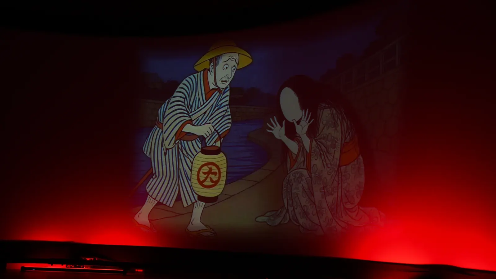
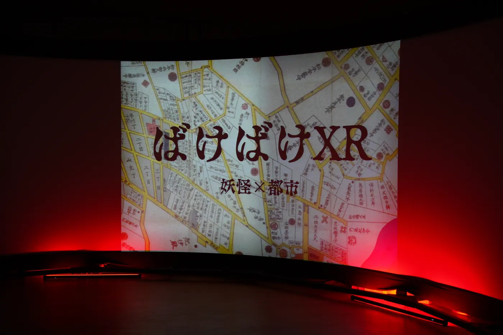

EXPERIENCE 01 ── 見るSEE
伝承を多感覚的に学ぶ没入体験
Immersive learning of folklore
怪異が語られた土地の古地図と、伝承をもとにした映像。目に見えない「気配」を、視覚と聴覚を通して受け取る XR コンテンツです。
Old maps of the place where a tale was told, and imagery drawn from the tale itself: XR content that lets you receive an unseen presence through sight and sound.

土地の記憶に、入り込む
Stepping into the memory of a place
妖怪の伝承は、いつも特定の土地と結びついています。「見る」体験では、怪異が語られた場所の古地図の上に伝承の映像を重ね、体験者をその場の空気の中へ連れていきます。教科書のように読むのではなく、暗がりの中で気配を感じ取ることで、伝承を身体的に学ぶことを狙っています。
Yōkai tales are always tied to a specific place. In the "See" experience, imagery of a tale is layered onto old maps of the place where it was told, carrying the visitor into the atmosphere of that spot. Rather than reading about folklore, you learn it bodily — by sensing a presence in the dark.
最初の題材は、東京・赤坂の紀伊國坂に伝わる「むじな」。夜道で泣く女に声をかけると、顔のないのっぺらぼうだった――という、小泉八雲『怪談』にも収められた話です。都市の中に残る怪異の記憶を、XR で現代の街に呼び戻します。
The first subject is the "Mujina" of Kii-no-kuni-zaka in Akasaka, Tokyo — the tale, also told by Lafcadio Hearn in Kwaidan, of a traveller who speaks to a weeping woman on a night road and finds she has no face. XR brings such memories of the uncanny back into today's city.

映像で見る
Watch
体験の雰囲気をまとめた映像です。
A short video that captures the atmosphere of the experience.
再生できない場合は YouTube でご覧ください。 — open on YouTube if the player does not load.
次の体験へ
What comes next
伝承の世界に触れたあと、体験者は自分自身の「説明のつかない体験」を語り、新しい妖怪を生み出す「作る」へ進みます。
Having touched the world of the tale, visitors go on to describe an unexplained experience of their own and create a new yōkai in "Make".